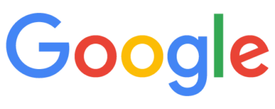
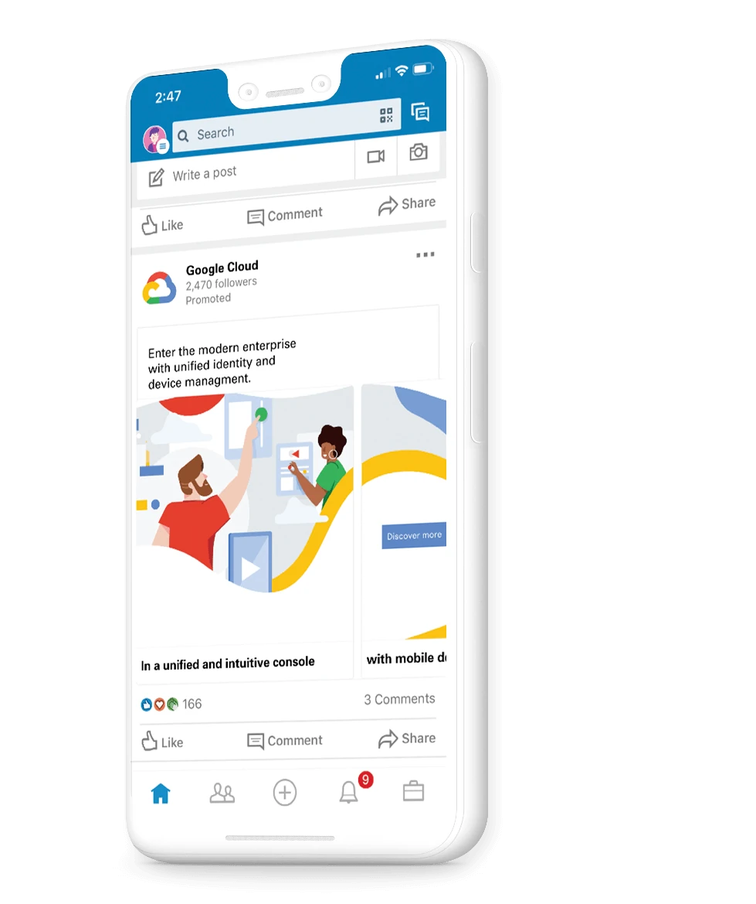
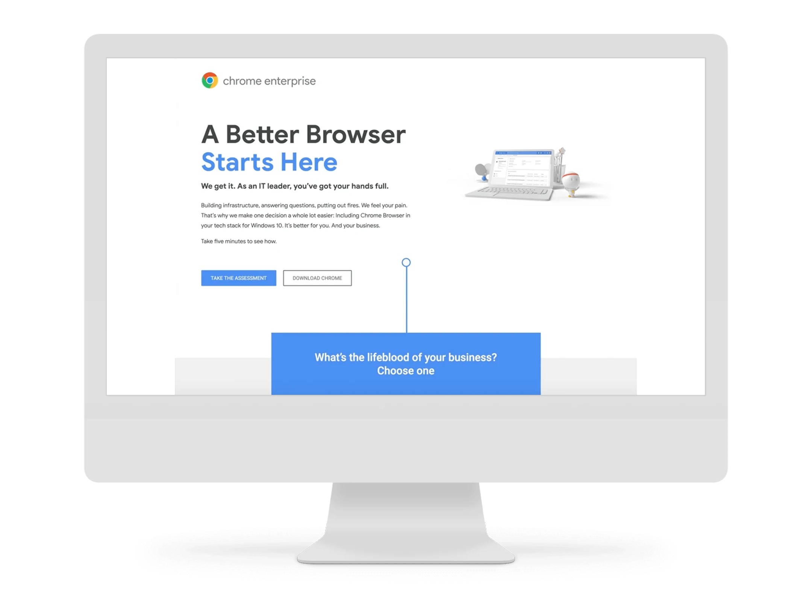
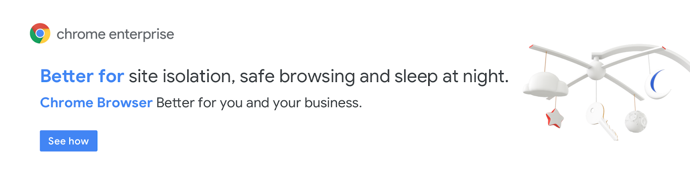
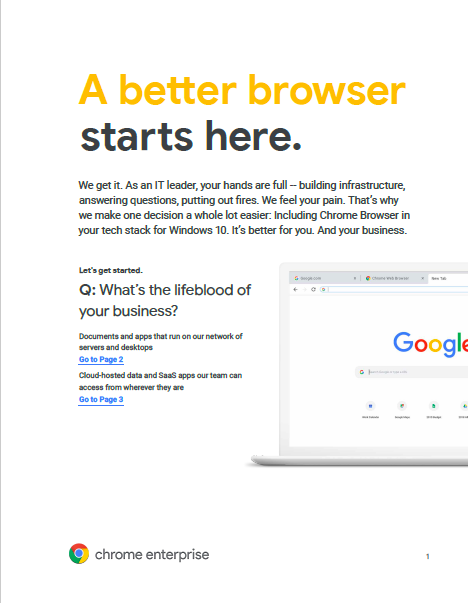
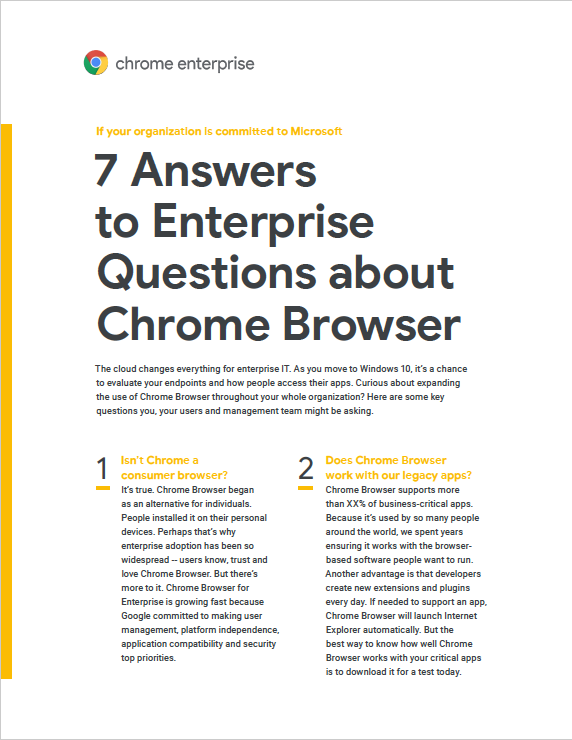
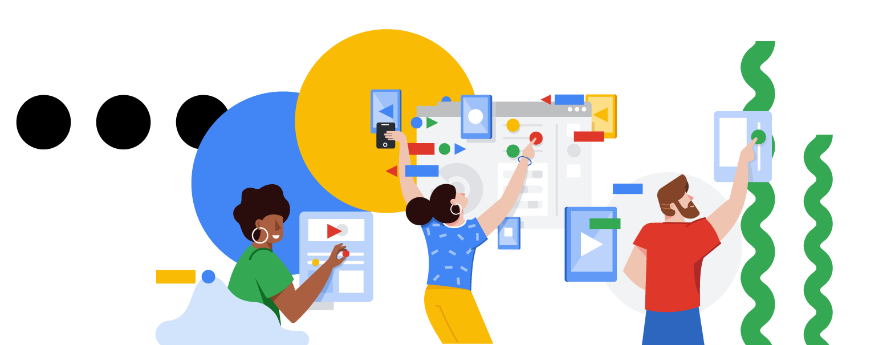

Creating the Most Powerful Digital Ecosystem for Work
Partnering with Google to revamp its approach to enterprise strategy, content, & collaboration.
Most of the world knows Google as a global technology company that dominates the consumer search market. But in the enterprise world, Google is a challenger.
To compete with entrenched brands, Google needed more than better technology—they needed powerful messaging and effective marketing that spoke to the fears and ambitions of their enterprise audience.
That’s where we came in.
We began working across Google’s enterprise products to create messaging rooted in their buyer’s journey. That work has required us to connect the dots between internal orgs and across go-to-market strategies to make Google’s enterprise marketing smarter, more human, and more effective.
Services
- Audience research
- Creative direction
- Marketing strategy
- UX design
- Presentation copy & design
- Advertising
- Content marketing
- Interaction design
Agency
- Article Group
Collaborators
- Jon Itkin
- Megan Jaffarian
- Breanna Banford
- Ryan Moore
- Haley Saba
- Liz Chatterton
Google Enterprise Mobility
Reaching IT decision makers with an empathetic message
Google was struggling to articulate a coherent, cohesive story for its enterprise mobility offering, from infrastructure (Google Cloud Platform) to collaboration apps (G Suite). Accordingly the market viewed Google offerings as a siloed collection of point solutions for disconnected use cases.
Through a rich discovery process, we realized that Google had the tech, expertise, and brand strength to be viewed as the broadest enterprise mobility offering (own that!). The core question was how to adapt this offering to the needs and buying habits of their customers. We developed a strategic positioning and messaging framework for Google to offer right-sized, flexible product bundles that are powerful, easy to implement, and secure.
Google Cloud Identity
We used human stories to launch Google’s enterprise mobility flagship
Using insights from our work on the Enterprise Mobility project, we crafted a digital campaign that positioned Google’s new identity-as-a-service offering as the new secure boundary of the modern enterprise.
The campaign struck a balance between pragmatic and transformative, with ads that placed feature-rich language (read: buzzwords) inside real world scenarios that would make the audience feel as though we understood their world (we do!) and cared about their problems (again, we do!). The product came off as a solution that could be implemented easily today, show positive results tomorrow, and evolve with the customer’s organization to provide value for years to come.

Google Drive
Reframing a popular offering to raise awareness in a new target audience
Google needed to market Drive Enterprise as a standalone content platform and appeal to enterprise customers who were not ready to rip and replace their existing solutions.
We realized we could address this challenge by appealing to a psychological truth: every enterprise wants to innovate, but most of them think they’re stuck with the way they work today. We created a digital campaign, sales site copy and design, and a thought leadership email campaign that let enterprises know they could keep their legacy systems while adding Google Drive to enhance productivity.

Chrome Browser for Enterprise
We gave aspirational buyers the tools they needed to succeed
Google wanted to protect their position as the dominant browser while expanding Chrome’s role as a key part of the enterprise tech stack. Through audience research, Article Group realized that the target audience wanted to be regarded as more than just administrative functionaries—so we spoke to those aspirations.
We created an interactive digital assessment tool that highlighted the connection between your browser and what culture of work your organization has. We supplement that tool with digital ads and technical white papers that demonstrated Chrome’s benefits. The result: we helped Google’s audience understand how easier product management and a streamlined network would help them to think big, impress the boss, and even have time for a leisurely lunch.
Display ads

Info one sheets

Ebooks

Results
250%
GROWTH
Over our five year relationship the total number of paid business accounts grow by 250%. Do to our audience centric story telling strategy we were asked back to build creative systems and content marketing for an ever expanding array of their B2B offerings.
